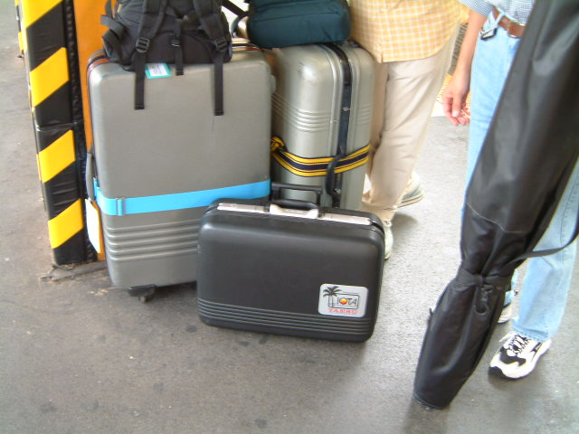

|
Flash ! DX
6m Today
|
Reportの読み方
[Back Issues Oct.2002]
TIME:UTC(JST-09:00)
Report from JA1RJU (PM95sq)
◎ 31.Oct.2002から暫くの間、Flash ! DXのリポートは休止します。
SEANET 2002 Perth
30.Oct.2002(06:00e)
*ZL-TV 22:50- 45.24/25/26--
*VK-TV 22:50- 46.240 --
9H1BT 22:55 50.105/100 CW LP
LU8MB 23:20 50.130 SSB
9H5SD 23:23 50.165 CW LP
(PY0FF 23:48 50.114 SSB JA6/JR6)
(EH8BPX 23:56 50.110 SSB JA6/JR6)
(CT3BM 00:03 50.135 SSB JA6/JR6)
ZL4AAA 01:33 50.110 CW loud ! QSO with HL1LTC
ZL1VHF 01:34- 50.043 CW Beacon
XV3AA 02:00 50.130 SSB
8N1OGA 02:02 50.110/103 CW
*ZL-TV 05:00- 45.24/25/26--
*VK-TV 05:00- 46.172/240 --
VK8RAS 05:00- 50.047 CW Beacon
VK4RGG 05:00- 50.058 CW Beacon
VK4ABP 05:00- 52.347 CW Beacon
VK4FNQ 05:21 50.110 CW
VK4XES 06:20 50.110 SSB
VK4TZL 06:24 50.110 SSB
VK4APG 06:24 50.110 CW
VK4FNQ 06:27 50.110 CW
29.Oct.2002(15:00e)
(S.Amwrica 22:49- 50.110 CW/SSB into JA8)
(LW1DZ.LU9EHF.CX3AN.LU2EEQ.LU5EGN.etc)
ZL-TV 23:00- 45.24/25/26--
ZP6CW 00:45 50.110/96 CW
VK4APG 02:35 50.110 SSB
VK4RGG 02:36- 50.058 CW Beacon
VK4FNQ 05:06 50.110 SSB
N7ET/DU7 05:21 50.110 CW
VK4FNQ 04:24 50.110 CW
VK4CP/6 06:00 50.110 CW
(A45WD 08:20 50.110 CW/SSB JA6/JR6)
(FR1GZ 10:38 50.120 SSB JR6)
DU1EV 11:55 50.110 CW
DU1EV/B 11:55- 50.008 CW Beacon
28.Oct.2002(15:00e)
CX2AAL 22:27 50.110 SSB
CX4CR 22:40 50.120 SSB
CX1CCC 22:45 50.120 SSB
LW1DZ 22:55 50.133 SSB
AY2DEK 22:57 50.110 SSB
LU9AG 22:58 50.115 SSB
LU1BQV 23:15 50.110 SSB
LU9DFN 23:25 50.125 SSB
CX1II 23:30 50.120 SSB
LU8MB 23:46 50.135 SSB
AY3HR 23:58 50.115 SSB
DU1EV 00:04 50.110 CW
LU9MBK 00:05 50.120 SSB
CE3SAD 00:26 50.150 SSB
ZP6CW 00:45 50.096 CW
PY2XAT 00:56 50.125 SSB
VK4APG 02:15 50.110/135 SSB
VK4PU 02:16 50.115 CW
VK2ZXC 02:43 50.110 SSB
VK2DN 02:46 50.110 CW
DU1EV/B 02:50- 50.008 CW Beacon
VK8RAS 02:50- 50.047 CW Beacon
VK4RGG 02:50- 50.058 CW Beacon
VK4FNQ 02:53 50.110 SSB
(West Asia 07:20- 50.098-111 CW/SSB JA6/JR6)
(A45WD.A45XR.5B4FL.4Z4DX.VU2LO.etc)
VK8RAS 09:50- 50.047 CW Beacon
27.Oct.2002(15:00f)
V73SIX 22:30- 50.0142 CW Beacon
KG6DX 23:05 50.100 CW
BY-TV 23:30- 49.750 --
ZL-TV 00:00 45.24/25/26--
ZL7C 00:50- 50.117 CW QSL via ZL4HU
ZL7C 01:20 50.117 CW
ZL3TIC 02:07 50.110 SSB
ZL3GS 02:14 50.150 CW
ZL3NW 02:17 50.106 CW
ZL7C 02:30 50.117 CW
ZL7C 02:50 50.117 CW
ZL4WA 03:20 50.105 CW
BD2OO 05:09 50.110 SSB
XV9DT 06:57 50.110/105 CW
N7ET/DU7 07:38 50.101 CW
DU1EV 07:39 50.102 CW
DU1EV/B 07:40 50.008 CW Beacon
VK6JQ 07:41 50.102 CW CQ EU
XV3AA 07:47 50.130 SSB
VK4CP/6 07:51 50.131 CW
DU1EV 07:58 50.115 SSB
KG6DX 11:10 50.115 CW/SSB
DU1EV 11:37 50.115 SSB
|
◎ 早朝は南米もロングパスのEUもオープンしない静かな6mだったが、00:50z頃からZL7C(Chatham Is)が入感。
オープン当初弱かった信号も01:20z頃から上昇、数分後にはRST599まで上がりJA'sのパイルも激しくなった。
01:50z頃からスプリットで捌き始めてからは順調にJA'sのパイルをこなしていた。
1エリア(PM95sq)では約2時間後の03:00z頃にフェードアウトした。
|
26.Oct.2002(15:00f)
V73SIX 21:40- 50.0142 CW Beacon
*CE-FM 21:40- 47.90/48.30-- loud !
CE3SOC 21:59 50.110 SSB
AY6EF 22:00 50.108 CW
LW1DZ 22:02 50.133 SSB
LU8AHW 22:08 50.104 CW
CE3SOC 22:14 50.120 SSB
LW1DZ 22:25 50.133 CW
AY2DEK 22:31 50.110 SSB
V73SIX 23:00- 50.0142 CW Beacon
*CE-FM 00:00- 47.90/48.30-- still loud !
LU9HUP 00:30 50.120 SSB
LW2DPW 00:35 50.105 SSB
CE3SAD 00:40 50.110 SSB
VK4JH 01:20 50.110 CW
*9M-TV 01:30- 48.240/260 --
9M2/JI1ETU 01:30- 50.085 CW Beacon
XV9TH 01:46 50.110 SSB QSL via SK7AX
*VK-TV 02:00- 46.172/240 --
KH6SX 02:53 50.110 CW 120deg.
VK8RAS 03:00- 50.047 CW Beacon
VK4RGG 03:00- 50.058 CW Beacon
VK4RTL 03:00- 50.087 CW Beacon
VK4ABP 03:00- 52.347 CW Beacon
VK3SIX 03:20 50.110 CW
VK4JH 03:29 50.110 CW
VK4BLK 03:45 50.110 CW
VK4FNQ 03:45 50.110 CW
FK8HC 03:49 50.110/120 SSB
VK4CXQ 03:51 50.110 CW
VK4PU 03:55 50.115 SSB
VK4APG 06:13 50.110 CW
VR2XMT 07:07 50.115 SSB
4D70VDG 07:09 50.195 SSB
9M2TO 07:15 50.115 SSB/CW
DS1CCU 07:20 50.120 CW
VK4CP/6 07:27 50.110 SSB
VK6JQ 07:31 50.102 CW
VU2LO 07:34 50.115 CW
(EU's 0750- 50.120 SSB/CW into JA3-JA6/JR6)
(IW9CER.IK1EGC.9A1Z.etc)
XV9DT 07:55 50.102 CW
VK6JQ 08:09 50.108 CW
DU1/N6HPX 08:10 50.120 SSB
DU1EV/B 08:20- 50.008 CW Beacon
DU1EV 08:22 50.094 CW
XV9DT 08:49 50.110 CW
VK4CP/6 09:27 50.110/130 SSB CQ EU (QTH GL=PH12CH)
VK6JQ 09:57 50.107 CW
XU7ACD 10:06 50.121 SSB
VK4BLK 10:13 50.110 CW CQ EU
◎ 早朝から南米がオープン。
2240z頃に一旦南米のコンデションは落ちてしまったが、47.9/48.3MHzのCE-FMは強力に聞こえている。
今日の第2幕は00:00z過ぎからのLU's入感で始まったが、このコンデションは30分程で終わった。
|
25.Oct.2002(15:00f)
V73SIX 22:30- 50.0142 CW Beacon
LU9EHF 22:43 50.110 SSB
*CE-FM 22:45- 47.90/48.30--
V73GOD 22:55 50.110 SSB
LU9AEA 23:03 50.120 SSB
LU2DO 23:08 50.115 SSB
LU9DFN 23:10 50.125 SSB
CX5BW 23:14 50.105 CW
CX4AAJ 23:20 50.150 SSB
CE3SOC 23:28 50.106 SSB
LW5DXI 23:30 50.101 CW
KH6SX 23:35 50.101 CW
LW1DZ 23:45 50.135 SSB
LU8AJ 23:50 50.110 SSB
LU2EEQ 23:55 50.110 SSB
CE3RR 00:05 50.110/106 SSB
LU8MB 00:09 50.136 SSB
LU9EHF/B 00:30 50.015 CW Beacon
LU2DO 00:42 50.115 SSB
LU7JT 00:46 50.110 SSB
LU6QI 00:50 50.102 CW
LU2EEQ 00:57 50.110 SSB
LU2NI 01:00 50.118 SSB
CE3SOC 01:05 50.106 SSB
HL1LTC 01:12 50.106 SSB QSO with CE3SOC
CE3SOC 01:30 50.110 CW
V73SIX 02:00- 50.0142 CW Beacon
KH6SX 02:05 50.110 CW
N7ET/DU7 02:15 50.110 CW
XV3AA 02:30 50.130 SSB
XV9DT 03:13 50.110 CW
XV9DT 03:19 50.130 SSB UP5-10
UN7QX 03:45 50.110 CW
XV9DT 03:59 50.100 CW
(4Z5CX 05:36 50.108 CW JA4-JR6)
(5B4FL 05:55 50.110 SSB JA6/JR6)
VU2LO 07:00 50.110 CW
8N1OGA 07:00 50.102 CW
DU1/N6HPX 07:15 50.125 SSB
DU1EV/B 07:15- 50.008 CW Beacon
9M8YY 07:25 50.108 CW
N7ET/DU7 07:30 50.098 CW
DS1CCU 08:00 50.110 CW
(TR0A/B 08:08- 50.048 CW Beacon 300deg.into JR6 RST579!)
DU1EV 08:30 50.107 CW
(SU1SK 08:43 50.110 SSB JR6 No QSO/report only)
(A45WD 08:45 50.108 CW JA6/JR6)
DS1CCU 08:57 50.110 CW SC
HL1JV 08:59 50.110 CW SC
8N1OGA 09:30 50.102 CW
VK4BLK 09:45 50.110 CW
(EU's 10:25- 50.110- CW SC JA5.6)
(G4ASR.GW3MFY.G0TSM.F5JKK.G4RGK.EI3IO.GW0GEI.GW7SMV.etc)
(ON4GG 10:33 50.095 CW SC JA2)
◎ 早朝から南米の大オープンで賑わった。今季で最も安定した強力なCE、LU、CXの信号が約3時間ほど入感していた。
クラスターのリポートによると、南米とQSOしているJAの信号が北米西部でもスキャッターで確認されたとの事だが、
昨日の様なダイレクトのパスは無かった。
昼過ぎからKazakhstanのUN7QXが入感、西方向のコンデションも上昇。
夕方になって沖縄からアフリカ西海岸のTR0A/B(Gabon)のビーコン入感がリポートされている。
|
24.Oct.2002(15:00f)
(LU9EHF 21:59 50.110 CW JA8)
XE2EED 22:36 50.110 CW
CX2P1 22:59 50.110/120 SSB QSL via EA5KB
(W7.6's 23:20-35 50.095-125 CW/SSB into JA1.2.3.5.7.9.0)
(K7OFT.K7WIA.K7JX.W7EW.WX7R.K7IEY.KI6CG.K6QG.K6QXY.K7MAC.etc)
(VE7SKA 23:54 50.125 SSB JA2)
K7AD 23:58 50.125 SSB
W7EW 00:00 50.125/140 SSB
W6QUV 00:13 50.096 CW
KI6CG 00:17 50.170 SSB
WA6JRA 00:19 50.102 CW
KL7IKV 00:35 50.105 CW
*CE-FM 01:30- 47.90/48.30--
*VK-TV 01:30- 46.172/240 --
PY2XB 01:45 50.110 CW
KH6SX 01:54 50.110 SSB
DU1EV/B 12:00- 50.008 CW Beacon
N7ET/DU7 12:36 50.110/101 CW
XV3AA 13:10 50.130 SSB
9M8YY 13:20 50.102 CW QSL via JR3WXA
VK8AA 13:39 50.107 CW
23.Oct.2002(15:00f)
9H1BT 21:50 50.110/100 CW LP
*ZL-TV 21:50- 45.24/25/26-- ↓
IG9/I2ADN 22:05 50.110 CW
*VK-TV 22:45- 46.240 --
CX2PI 23:05 50.130 SSB
(W6,7's 23:07- 50.094-170 CW/SSB into JA1-3.7-0)
(K6QXY.W6QUV.W6KBK.N6JV.KI6CG.WA6JRA.K7AD.etc...but no sig in PM95sq)
PP5LD 23:17 50.110 SSB
PY2XB 23:45 50.104 CW
N7ET/DU7 23:52 50.110 CW
*ZL-TV 00:00- 45.24/25/26--
*VK-TV 00:00- 46.172 --
VK4BLK 02:46 50.105 CW
VK4BLK 02:52 50.096 RTTY?
VK8RAS 03:00- 50.047 CW Beacon
V73SIX 03:00- 50.0142 CW Beacon
*9M-TV 06:00- 48.240/260 --
VK8RAS 07:00- 50.047 CW Beacon
XV3AA 08:44 50.130 SSB
XV3AA 09:24 50.130 SSB
VK8RAS 09:30- 50.047 CW Beacon
VK6JQ 09:45 50.113 CW
DU1EV 12:29 50.110 SSB
DU1EV 12:30 50.600 AM
DU1EV/B 12:35 50.008 CW Beacon
DU1/N6HPX 12:35 50.125 SSB
DU1EV 12:48 50.100 CW
(HP2CWB 13:46 50.170 CW JA2)
HP1AC 13:52 50.110 CW
HP2CWB 14:10 50.170 CW/SSB
HP1AC 14:20 50.101/104 CW/SSB
|
◎ 今朝は短いEUのロングパスのオープン後に、今季初のF2による北米の入感があった。
入感したのはW6/7など西海岸の狭い範囲だけだったが、日本側の入感エリアもかなり限られたスポットなものだった。
最近は"日替わり"で目まぐるしくコンデションが変化している。
深夜にロングパスで入感したHP1AC、HP2CWBは、2エリア以西との信号レベルが違い過ぎて、
1エリアからのQSOは難しい。
|
22.Oct.2002(15:00f)
*ZL-TV 00:00- 45.24/25/26--
*VK-TV 01:30- 46.172 --
*9M-TV 01:30- 48.240 --
V73SIX 03:30- 50.0142 CW Beacon
KH6SX 03:31 50.110 CW
V73SIX 06:30- 50.0142 CW Beacon
VK6JQ 07:03 50.110 CW
XV3AA 07:20 50.130 SSB
(DK2PH 08:28 50.094 CW SP=270deg JR6)
(PY2VST 08:30 50.107 CW LP=270deg JR6)
(HZ1MD 08:38 50.110 SSB JR6)
(SM7BAE 08:42 50.108 CW SC JA2)
VK8RAS 09:40 50.047 CW Beacon
VK6JQ 09:44 50.108 CW worked Eu
VK4FNQ 09:48 50.100 CW worked Eu
(HP2CWB 13:51 50.110 SSB LP JR6)
21.Oct.2002(16:00h)
*ZL-TV 22:20- 45.24/25/26--
*VK-TV 22:20- 46.172 --
*??-TV 22:20- 48.242/250 -- LP
IT9RZR 22:23 50.110/140 CW/SSB LP
VK4APG 23:34 50.110 CW
V73SIX 00:00- 50.0142 CW
(FO/I2YSB 00:51 50.110 CW JA6)
VK4ZSS 01:04 50.110 SSB
VK4WTN 01:05 50.110/130 SSB
FK8FZ 01:11 50.110 SSB
VK4RGG 01:20- 50.058 CW Beacon
*CE-FM 02:50- 47.90/48.30-- loud !
*9M-TV 02:50- 48.240/260 --
V73SIX 04:30- 50.0142 CW
(VU2LO 08:02 50.110 CW JR6)
VK6JQ 08:40 50.114 CW
(G4RGK 09:07 50.110 CW SC JA6)
(G4FUF 09:18 50.102 CW SC JA6)
ON4GG 09:45 50.095 CW SC weak
VK8RAS 11:20- 50.047 CW Beacon
VK6JQ 11:29 50.110 CW
DU1EV 12:06 50.110 CW
XV9DT 12:15 50.100 CW
VK8MS 12:30 50.100 CW QSO with XV9DT
VK8AH 12:39 50.100 CW
T88TU 12:44 50.120 CW
T88TU 13:20 50.120 SSB
DU1EV/B 13:45- 50.008 CW Beacon
VK8RAS 13:45- 50.047 CW Beacon
XV3AA 13:45 50.130 SSB
YB0CBI 13:55 50.110 SSB
DU1EV 13:56 50.110 SSB
(HP1AC 14:40 50.110 SSB LP JA3-JA6/JR6)
(TI5KD 14:45 50.120 SSB LP JA2-)
(TI5BX 14:47 50.110 SSB LP JA2-)
|
◎ 今朝は22:00z台に短時間EUのロングパスの入感がリポートされたが、48MHz帯のTVも23:00z過ぎには降下。
CE-TVが強力に入感していたが、1エリアでは南米の入感はなかった。
夕方に南西のスキャッターでG、F、ONなどのヨーロッパがオープンしたが、
1エリア(PM95)では信号も弱く呼べるレベルではなかった。
15:00z少し前から沖縄、九州など西日本を中心にロングパスでHP、TIなどがオープンしたが、
この信号も1エリア(PM95)では聞こえなかった。
|
20.Oct.2002(16:00h)
*ZL-TV 22:00- 45.24/25/26-- weak
*ZL-TV 00:30- 45.24/25/26--
*VK-TV 00:30- 46.172 --
(FO/I2YSB 00:58 50.110 CW JR6)
VK4ZTL 01:02 50.110 SSB
FK8CA 01:04 50.110 CW
FO/I2YSB 01:04 50.110 CW
(FO/IK2GNW 01:43 50.110 SSB JA2-)
VK4APG 01:50 50.110 SSB
V73SIX 03:00- 50.0142 CW Beacon
VK4JH 04:14 50.110 CW
VK6JQ 05:54 50.110 CW
VK4FNQ 06:15 50.110 SSB
V73GOD 07:14 50.110 SSB
V73SIX 07:15- 50.0142 CW Beacon
XV3AA 07:15 50.130 SSB
VK8RAS 10:00- 50.047 CW Beacon
VK4RGG 10:00- 50.058 CW Beacon
VK4RTL 10:00- 50.087 CW Beacon
VK4ABP 10:00- 52.347 CW Beacon
3D2RW 10:38 50.110 CW QSL via ZL1AMO
5W1SA 11:20 50.120 CW QSL via JH7OHF
T88YK 11:45 50.125 SSB QSL via JN1WTK
DU1EV/B 11:45- 50.008 CW Beacon
YB0CBI 12:40 50.110/115 SSB
DU1/N6HPX 12:45 50.140 SSB
N7ET/DU7 12:55 50.101 CW
VR2XMT 13:03 50.125 SSB
VK3DUT 13:03 50.125 SSB
VK3BQS 13:04 50.125 SSB
DU1EV 13:05 50.135 SSB
VR2XMT 13:36 50.110/125 SSB
VR2XMC 13:50 50.120 SSB
T88TU 14:05 50.120 SSB QSL via JK7TKE
VR2DXA 14:07 50.120 SSB
AD5KT/KH2 14:43 50.143 CW QSL via JA2KCT
T88TU 15:00 50.120 CW
AD5KT/KH2 15:10 50.143 CW
V8YYY 15:26 50.102 CW QSL via JR3WXA
KH2/JG3DOR 15:40 50.139 CW
19.Oct.2002(15:00f)
*ZL-TV 22:00- 45.24/25/26--
(9H1BT 22:47 50.110 CW LP JA2=PM95)
(SV1DH 23:00 50.110 SSB LP JA2=PM95)
*VK-TV 23:00- 46.172 --
*??-TV 23:40- 48.242/250 -- LP
9H1XT 23:45 50.110 CW LP
(EH8QL 23:49 50.110 CW ↓ JA3-6)
9H1AW 23:54 50.095 CW
(JY9NX 23:57 50.110 CW LP JA3)
FO/IK2GNW 02:49 50.110 SSB Australes Is
FO/I2YSB 02:54 50.110 CW
V73SIX 03:00- 50.014 CW Beacon
KH6IAA 03:35 50.110 SSB
VK4FNQ 05:45 50.110 SSB
VK6JQ 06:47 50.110 CW
VK4FNQ 06:52 50.110 SSB
(VU2RM 08:25 50.110 CW JR6)
(JY9NX 08:35 50.110 CW JR6)
VK8RAS 11:50- 50.047 CW Beacon
VK4ABP 11:50- 52.347 CW Beacon
N7ET/DU7 12:08 50.110 CW
VK6JQ 12:24 50.112 CW
18.Oct.2002(15:00g)
*ZL-TV 22:00- 45.24/25/26--
*??-TV 22:20- 48.242/250 -- LP
IT9RZR 22:45 50.107 CW LP loud !
9H1XT 22:50 50.100 CW ↓
EH8JF 22:53 50.103 CW
EH5FX 22:56 50.103 CW
IT9RZR 23:00 50.095 CW
EH5AGR 23:14 50.110 SSB
(EH9AI 23:18 50.110 SSB JA2)
EH5FX 23:20 50.103 CW
EH7HZ 23:25 50.130 SSB
IT9RZR 23:45 50.091 CW CQ JA
*VK-TV 01:00- 46.172/240 --
*ZL-TV 01:00- 45.24/25/26--
VK4RGG 01:05- 50.058 CW Beacon
VK4RGG 03:00- 50.058 CW Beacon
VK4BRG 03:00- 50.077 CW Beacon
V73SIX 03:00- 50.014 CW Beacon
KH6SX 03:02 50.110 CW
KH6HME/B 03:03- 50.0615 CW Beacon
VK4PU 03:22 50.110 CW
NH7RO 03:25 50.110 SSB
V73SIX 06:40- 50.014 CW Beacon
N7ET/DU7 07:11 50.110 CW
VK4BLK 07:24 50.110 CW
VK4FNQ 07:29 50.110 SSB
VK4ABW 08:13 50.110 CW
(YA4F 08:30 50.113 CW direct JR6/JA6)
VK4JH 09:16 50.110 CW
VK8RAS 09:30- 50.047 CW Beacon
VK4RTL 09:30- 50.087 CW Beacon
VK6JQ 09:32 50.110 CW
DU1EV 12:43 50.110 CW
DU1/N6HPX 13:30 50.110 SSB
DU1/N6HPX 14:06 50.125 SSB
N7ET/DU7 14:37 50.110 CW
17.Oct.2002(15:00d)
*??-TV 21:30- 48.250 -- LP
*VK-TV 21:30- 46.172 --
*ZL-TV 21:30- 45.24/25/26--
9H1AW 21:46 50.110 CW LP
IG9/I2ADN 21:46 50.108 CW LP
9H1BT 22:30 50.115 CW LP
AY5FZ 22:33 50.108 CW
IG9/I2ADN 22:40 50.108 CW LP
*VK-TV 01:30- 46.172/240 --
*9M-TV 01:30- 48.240 --
*HS-TV 01:30 48.250 --
VK4RGG 01:50- 50.058 CW Beacon
VK2HO 02:56 50.110 SSB
VK2DN 03:02 50.110 CW
VK4APG 03:15 50.110 CW
VK4RTL 03:15- 50.087 CW Beacon
VK4ABP 03:15- 52.347 CW Beacon
VK4YPI 03:32 50.110 SSB
VK4ABW 08:52 50.110 CW
VK6JQ 09:12 50.110 CW
VK4FNQ 09:14 50.110 SSB/CW
VK4WDM 09:18 50.110 SSB
VK8AH 13:44 50.110 CW
N7ET/DU7 14:09 50.110 CW
Report from JA6FRI (PL47ea)
16.Oct.2002(19:00g)
??-TV 22:30- 48.250 -- LP
EH8BPX 22:32 50.110 SSB LP
*VK-TV 23:00 46.172 --
PY's 00:00- 50.110 CW/SSB
PY2XB 01:00 50.110 CW
Report from JA1RJU (PM95sq)
*VK-TV 12:00- 46.172 --
VK8RAS 12:00- 50.047 CW Beacon
VK4RTL 12:00- 50.087 CW Beacon
VK3SIX 13:17 50.110 CW
N7ET/DU7 13:35 50.110 CW
DU1EV 13:40 50.109 CW
VK8AH 14:01 50.110 CW
Report from JA6FRI (PL47ea)
15.Oct.2002(19:00g)
(LU.KH6 21:00 50.110 SSB JA8)
(LU.PP5.CE3 21:50 50.110 SSB JA1-)
??-TV 23:00- 48.250 -- weak
PY2XB 23:07 50.110 CW
PY2XB 23:10 50.100 `CW CQ
*ZL-TV 23:15- 45.24/25/26--
*VK-TV 23:15- 46.172 --
PY2SFY/B 23:20- 50.009 CW Beacon
PY2OF 23:28 50.110 SSB
*CE-FM 23:40- 47.900 FM CE Music
PY1RO 23:40 50.110 CW
PY2XB 23:45 50.095 CW worked JA's
PY2XB 00:20 50.095/103 CW CQing
KH6HME/B 00:20- 50.0615 CW Beacon
*9M-TV 01:00- 48.240/260 --
9M2TO/B 01:00- 50.005 CW Beacon
PY2XB 02:17 50.110 CW
V73SIX 05:20 50.014 CW Beacon
VR2SIX 08:40 50.075 CW Beacon
VR2PX 09:09 50.110 CW
BA7IA 09:14 50.110 CW
*VK-TV 09:30- 46.172 --
VK4FNQ 09:53 50.110/130 SSB
VK4CXQ 10:02 50.110 CW
VK4CXQ 11:05 50.100 CW
VK8AH 13:28 50.110 CW
*??-TV 18:00- 48.250 --
9M2/JI1ETU 18:30 50.085 CW Beacon
Report from JA6FRI (PL47ea)
14.Oct.2002(17:00g)
*ZL-TV 22:30- 45.250 -- weak
*??-TV 22:30- 48.250 -- LP
*VK-TV 22:45- 46.172 -- weak
IT9RZR 22:55 50.140 SSB/CW LP loud !
9H1XT 22:55 50.100 CW LP
PR7AR 23:00 50.110 CW GL=HI23
PY7ZZ 23:08 50.110 CW GL=HI20DI
EH9AI 23:11 50.110 CW LP RST539
ZP6CW 23:30 50.110 CW
EH8BPX 23:30 50.180 SSB LP
ZP6CW 23:45 50.095 CW
PP1CZ/B 23:45 50.082 CW Beacon
PY0FF/B 23:45 50.006 CW Beacon
EH8BPX 23:47 50.110 SSB LP
PY7COU 00:02 50.130 AM !
PY2XB 00:23 50.110 CW
ZP6CW 00:39 50.110 CW
PY2SFY/B 00:40- 50.009 CW Beacon
PY0FF/B 00:40- 50.006 CW Beacon
PP1CZ/B 00:40- 50.082 CW Beacon
PY2XB 00:58 50.110 CW
ZP6CW 01:02 50.110 SSB
PY2XB 01:52 50.110 CW
VU2CBU 05:56 50.110 SSB
VU2CBU 07:18 50.110 SSB
KG6DX 10:02 50.110/105 CW
*VK-TV 11:00- 46.172/240 -- loud ! evening TEP
VK4JH 11:17 50.110 CW
VK6JQ 11:30 50.110 CW
DU1EV/B 11:50- 50.008 CW Beacon GL=PK04
DU1/N6HPX 12:02 50.110/125 SSB
N7ET/DU7 12:05 50.110/101 CW
DU1BP 12:22 50.130 SSB
DU1EV 12:37 50.105 CW
9M2/JI1ETU 13:10- 50.085 CW Beacon
9M6AAC 13:13 50.113 SSB QSL via N2OO
9M6AAC 13:39 50.113 CW
N7ET/DU7 13:40 50.101 CW
VQ9JT 13:47 50.105 CW
9M2TO 13:51 50.117 CW
HC8GR/B 13:58 50.035 CW LP Beacon GL=EI59 RST599
VR2XMT 14:08 50.110 SSB QSO with YA4F
YC1MH 14:10 50.110 SSB QSO with YA4F
9M2TO 14:15 50.117 SSB
VR2KW 14:16 50.105 CW
VQ9JT 14:19 50.105 CW
VK8MS 14:38 50.110 CW
VU2ZAP 14:40 50.110 SSB
YA4F 14:45 50.105 CW weak
9M2TO 14:57 50.117 CW
VU2ZAP 15:08 50.110 SSB QSO with YA4F
9M2/JI1ETU 16:00- 50.085 CW Beacon
9M2TO/B 16:00- 50.005 CW Beacon
Report from JA6FRI (PL47ea)
13.Oct.2002(15:00g)
(I0WTD 21:58 50.100 CW JA2=PM95)
(EH3LL 22:04 50.100 CW JA2=PM95)
*??-TV 22:50- 48.242/250 -- LP 23:00 loud !
(9H1BT 23:14 50.103 CW JA1-)
PY4OY 23:52 50.110 SSB worked Eu
PY4OY 00:05 50.135 SSB
PY2XB 00:08 50.120 SSB worked Eu
PP1CZ/B 00:10- 50.082 CW Beacon
PY2SFY/B 00:10- 50.009 CW Beacon (GL=GG77ga) 4W+Ant=5/8
*??-TV 00:10- 48.250 -- LP loud !
PY4OY 00:30 50.110/135 SSB/CW CQ Asia loud !
(LU/LW.CX2 00:50- 50.103/107 CW/SSB JA1-)
(EH8BPX 00:55 50.180 SSB JA6)
PY2RO 00:57 50.104 CW
ZZ2KOS 01:07 50.110 SSB
PY1NX 01:11 50.106/094 CW
ZP5AA/B 01:30- 50.024 CW Beacon
ZZ2KOS 01:40 50.140 SSB GL=GG66
PY1NX 01:45 50.120 SSB GL=GG66
PY2GR 01:47 50.135/130 SSB GL=GG66
PY7ZZ 01:51 50.110 CW
PP5LD 01:52 50.110 SSB
ZP6CW 01:55 50.096 CW loud !
AY1FCO 02:01 50.115 SSB GL=FF98
PT2JC 02:09 50.115 SSB
PY2RO 02:13 50.106 CW
KH6SX 02:24 50.110 CW
FO3BM 02:25 50.110 CW/SSB
FO3BM 03:16 50.110 SSB loud !
V73SIX 05:00- 50.014 CW Beacon
VU2CBU 06:06 50.110 SSB
VR2XMT 07:15 50.110 SSB
FR1GZ 09:23 50.110 SSB CQ loud !
VU2VVP 09:57 50.110 SSB
VR2XMT 09:57 50.110 SSB
FR1GZ 09:59 50.110 SSB/CW
VR2YSI 10:55 50.110 SSB
YB0CBI 12:33 50.110 SSB
VR2XMT 14:54 50.110 SSB
9M2/JI1ETU 15:00- 50.085 CW Beacon
Report from JA6FRI (PL47ea)
12.Oct.2002(15:00g)
*??-TV 22:50- 48.250 -- LP
PR7AR 23:13 50.110 CW
9H1AW 23:20 50.098 CW
PY0FF/B 23:25- 50.006 CW Beacon
9H1AW 23:38 50.110 CW
VK4ABW 23:57 50.110 CW
*VK-TV 00:00- 46.172 --
*ZL-TV 00:00- 45.24/25/26-- weak
PY7ZZ 00:12 50.110/105 CW
(EH8JF 00:13 50.125 SSB JA2-)
PY2XB 00:20 50.100/108 CW
PY4OY 00:40 50.120 SSB loud
PY1NX 00:47 50.110 CW
PP1CZ/B 00:50- 50.082 CW Beacon
PY0FF/B 00:50- 50.006 CW Beacon
PY4OY 01:05 50.120/110 SSB
PY2WC 01:07 50.100/110 CW
PY2NDX 02:04 50.110 CW
PY1NX 02:36 50.110 SSB
PY3CQ 02:57 50.110 CW
KH6SX 02:58 50.110 CW
PY3NZ 03:07 50.110 CW
KH6HME/B 03:40- 50.0615 CW Beacon
V73SIX 04:30- 50.014 CW Beacon
KH6SX 04:38 50.110 CW
KH6SX 06:06 50.110 CW
FO/JI1WTF 07:35 50.115 CW (Marquesas Is)
FO5RA 07:45 50.112 CW
FO/JI1JKW 07:47 50.115 CW (Marquesas Is)
FO/JI1JKW 08:10 50.115 CW still good ! into PL47
FO5RA 08:13 50.112 CW
FO/JI1JKW 08:35 50.115 CW weak and F.out
VR2XMT 08:45 50.110 SSB
(JY9NX 09:25 50.091 CW SC JA1-)
(JY9NY 09:50 50.110/130 CW SC JA1-)
9M2TO/B 13:50- 50.005 CW Beacon
|
◎ 早朝からロングパスのヨーロッパがオープン。各エリアから万遍なくリポートされていた、
9H1AW以外は、JA側で聞えていたEU/AFの局はスポット的で狭い範囲のオープンだった。
◎ 10月9日午後の沖縄への初入感に続き、FO/M(マルケサス)が今日の午後、
再び沖縄から西日本にかけてオープンした。
07:30z頃から沖縄・石垣島で入感し始めたFO/JI1WTFの信号は、
時間と共に沖縄本島、奄美諸島、九州へと移った。
途中で、オペレーターがFO/JI1JKWに替わった07:45z頃がピークで、奄美では信号がRST569程度ながら、
比較的安定に約1時間ほど聞えていた。
昨日(11日)は、同時刻にオープンしたYA4F(アフガニスタン)の"入感騒ぎ"で、
FO/Mはリポートも無く心配されていたが、
JAに対する最後の運用チャンスとなる今日のオープンは、双方にとって大変幸運なものだった。
予定では10/12の19:00z頃(日本時間・10/13早朝)までFO/M(Marquesas Is)から運用後、
FO(French Polynesia)経由で帰国の途につく。
|
Report from JA6FRI (PL47ea)
11.Oct.2002(15:00e)
*VK-TV 23:20- 46.172 -- weak
*ZL-TV 23:20- 45.24/25/26-- weak
PP1CZ 00:05 50.110/105 CW
PY2WC 00:45 50.110 CW
PY0FF/B 01:30- 50.006 CW Beacon
PP5LD 01:43 50.110 SSB
PY2XB 01:55 50.100/110 CW
PY2WC 02:08 50.110 CW
KH6SX 02:20 50.110 CW
PY2HN 02:58 50.110 CW
PY7ZZ 03:03 50.110 CW
PY0FF/B 03:10- 50.006 CW Beacon
ZP5AA/B 03:15- 50.024 CW Beacon
PP5LD 03:20 50.110 SSB
KH6SX 03:22 50.110 CW
PY2HN 03:41 50.110 CW
*VK-TV 05:00- 46.172 --
*9M-TV 05:00- 48.240/260 --
5B4FL 05:43 50.110 SSB Direct RS 59
BA7NQ 06:13 50.110 CW
A45XR 06:49 50.110 CW
YA4F 08:13 50.106 CW Direct RST 559
(YA4F 08:30 50.108 SSB SC 220 ? vy weak JA1-6)
A45XR 08:30 50.110 CW Direct loud 599
YA4F 09:50 50.108 SSB/CW Direct weak
HZ1MD 10:30 50.110 CW
N7ET/DU7 13:16 50.110 CW
VQ9JT 14:19 50.110 SSB
9M2/JI1ETU 14:50 50.085 CW Beacon
Report from JA6FRI (PL47ea)
10.Oct.2002(15:00e)
(9H1AW 21:35 50.110 CW LP JA1)
(IT9RZR 22:07 50.104 CW LP JA1)
(IG9/I2ADN 22:13 50.110 CW LP JA2)
*VK-TV 23:20- 46.172 -- weak
PY5CC 01:00 50.110 CW
PP1CZ/B 01:05- 50.082 CW Beacon
ZP5AA/B 01:07- 50.024 CW Beacon GL=GG14
PY2WC 01:15 50.110 CW
PP1CZ 01:29 50.110 CW
KH6SX 01:44 50.110 CW
LU2NI 01:45 50.110 SSB
PY1RO 02:09 50.110 CW
KH6SX 02:14 50.110 CW
V73SIX 02:18- 50.014 CW Beacon
LU2NI 02:43 50.110 SSB
V73GOD 04:11 50.110 CW
*9M-TV 05:00- 48.240/260 -- loud
VK6JQ 07:29 50.110 CW
VK4FNQ 09:10 50.110 SSB
(YI9OM 09:20 50.101 CW SC JA1-)
VK4FNQ 09:43 50.110 SSB
◎ 昨日、沖縄にオープンしたFO/M(マルケサス)は、今日は残念ながらJAには入感しなかった。
早朝、東日本に短時間入感したロングパスのヨーロッパは今季初のオープン。
夕方、イラクのYI9OMが再び南西のスキャッターで入感。クラスターへの本人からのリポートによると、今日のJAとのQSOは10局だったと。
YI9OM-@ 50101.0 JA4MBM fm LM23 open to JA, wkd 10x JA0904 10 Oct
|
Report from JA6FRI (PL47ea)
09.Oct.2002(15:00c)
FO/JI1WTF 07:30 50.110 CW/SSB JR6/JA6(Marquesas Is)
VK4ABW 09:48 50.110 CW
VK4FNQ 09:51 50.110 SSB
Report from JA1RJU (PM95sq)
*ZL-TV 22:00- 45/24/25/26-- loud
*VK-TV 22:00- 46.172 --
*BY-TV 22:30- 49.750 --
KH6SX 23:00 50.110 CW
ZL3TY 23:38 50.110 CW loud
*ZL-TV 23:40- 50.740 FM TV Audio
08.Oct.2002(15:00e)
*ZL-TV 22:40- 45/24/25/26--
*VK-TV 23:00- 46.172 --
VK4JH 23:45 50.110 CW
*VK-TV 02:00- 46.172 --
*9M-TV 02:00- 48.240/260 --
VK6JQ 07:42 50.112 CW
9V1UV 07:53 50.110 SSB
5B4AGM 08:10 50.110/115 CW SC 220
(YI9OM 08:17 50.102 CW SC JA2-)
VK6JJJ 10:28 50.110 SSB
◎ 今朝は南米のオープンもなく、早くから強力に入感していた45/46MHz帯のTVも早々とダウン。
日中のコンデションは上昇しなかったが、夕方に南西のスキャッターで5B4AGMが入感、この直後にYI9OMが50.102MHzで入感。
クラスターにリポートされていたYI9OM本人からの書き込みによると、JAとのQSOは2局だったと。
"YI9OM 50112.0 VK6JQ new one and 2 x JA only DXCC n0842 08 Oct"
◎ 昨夜、西日本で入感していたHZ1MD(Saudi Arabia)は、残念ながら2002年9月30日現在(今年のハムフェア時の申請を含む)
6mのDXCCにクレジットされていない。理由は"No documentation Rec"。
|
07.Oct.2002(15:00g)
*ZL-TV 22:00- 45/240/260 --
*VK-TV 23:00- 46.172 --
*CE-FM 23:00- 47.90/48.30--
LW1DZ 23:14 50.110 SSB
LU9EHF 23:17 50.135 SSB
CE3BFZ 23:17 50.125 SSB
CX4CR 23:25 50.125 SSB
LU8MB 23:27 50.160 SSB
LU9EHF 23:33 50.128 SSB
LW1DZ 23:36 50.140 SSB
AY3HR 00:20 50.114 SSB
KH7MS 00:27 50.130 SSB
KH6HME/B 00:35- 50.061 CW Beacon
NH7RO 00:50 50.110 SSB
VK4RGG 02:30- 50.058 CW Beacon
VK4BLK 02:41 50.110 SSB
*9M-TV 04:00- 48.240/260 CW
VK6RO 04:49 50.110 CW
VK8RAS 04:50- 50.047 CW Beacon
VK4RGG 04:50- 50.058 CW Beacon
VK6RPH 04:50- 50.066 CW Beacon
N7ET/DU7 04:57 50.110/102 CW
DU1EV/B 06:00- 50.008 CW Beacon
V73SIX 06:00- 50.014 CW Beacon
VK4BLK 07:58 50.110/105 CW CQ EU
VK4FNQ 07:59 50.112 CW/SSB
VK4CH 08:09 50.110 SSB
VK4JH 08:42 50.110 CW
VK4BLK 08:45 50.103 CW CQ EU
VK8RAS 09:00- 50.047 CW Beacon
VK4RGG 09:00- 50.058 CW Beacon
VK4RTL 09:00- 50.087 CW Beacon
VK4ABP 09:00- 52.347 CW Beacon
VK6JQ 09:14 50.110 CW
VK6JJJ 09:17 50.110 SSB
(5R8FU 10:24 50.110 CW JA2-JA6/JR6)
(HZ1MD 11:05 50.110 SSB JA6/JR6)
(4S7JAG 11:40 50.110 SSB JA2-JA6/JR6)
|
◎ 今朝も南米がオープン。西東京(PM95)では、前線の通過による風と"雨ノイズ"のため弱い信号は確認出来ない。
1時間程で南米はフェードアウトしたが、その後にハワイが強力に入感。
|
06.Oct.2002(15:00f)
*VK-TV 22:00- 46.172/240 --
*ZL-TV 22:00- 45/24/25/26--
*CE-FM 22:00- 47.90/48.30--
CX4CR 22:18 50.110 SSB
LU3DO 22:38 50.115 SSB
LU9EM 22:40 50.100 CW
LU9EHF 22:41 50.130 SSB
CX4AAJ 22:43 50.150 SSB
CX4CR 22:44 50.120 SSB
LW5DX 22:47 50.134 SSB
LW2VK 22:50 50.103 CW
CX6DH 22:55 50.117 SSB
AY6EF 23:03 50.105 CW
LW3EX 23:07 50.103 CW
CE3SAD 23:10 50.135 SSB
LW5EJU 23:17 50.145 SSB
LU8MB 23:17 50.160 SSB
LU1BQ 23:26 50.116 SSB
CE3SOC 23:28 50.106 SSB
LU8AHW 23:29 50.106 CW
CE3RR 23:32 50.106 SSB
LU2DPW 23:35 50.100 CW
LU7DIR 23:36 50.108 CW
LW3EX 23:40 50.103 CW
AY6DTS 23:44 50.110 SSB QSL via LU6DTS
CX4CR 23:44 50.120 SSB
LU9EHF 23:48 50.130 SSB
CX4AAJ 23:49 50.150 SSB
LU3DCA 23:53 50.155 SSB
LU8MB 23:53 50.160 SSB
LU2DPW 23:57 50.145 SSB
LU6DRV 23:59 50.127 SSB
LU8AHW 00:05 50.105 CW
CE3RR 00:07 50.106 SSB
LU7DIR 00:08 50.109 CW
LU1BQ 00:09 50.117 SSB
LU6DRV 00:10 50.127 SSB
LU9EHF 00:11 50.130 SSB
CE3SAD 00:11 50.135 SSB
LU8MB 00:12 50.160 SSB
CE3RR 00:30 50.106 SSB
LU2NI 00:38 50.110 SSB
CE3SAD 00:45 50.135 SSB
KH7MS 00:47 50.135 SSB
CE3SAD 00:55 50.120 SSB F.out 00:55z
*9M-TV 03:00- 48.240/260 --
VK4WDM 03:34 50.110 SSB
VK4RTL 03:34 50.087 CW Beacon
9M2/JI1ETU 05:34 50.115 SSB
V73SIX 05:45 50.014 CW Beacon
9M2TO 05:55 50.157 CW
9M2KT 06:10 50.125 SSB
VR2XMT 06:40 50.110 SSB
N7ET/DU7 06:55 50.102 CW
V73GOD 07:38 50.110 SSB
VK8MS 07:39 50.110 CW
FO/JI1JKW 07:50 50.115 SSB/CW (French Polynesia)
FO/JI1WTF 09:15 50.115 CW
DS1PEG 11:52 50.110 CW/SSB
VK8MS 12:10 50.110 CW
|
◎ 昨日に続き早朝から南米が大オープンした。
今日は信号も強力で入感のエリアもCE、LU、CXと広範囲に同時にオープン。
アルゼンチン(LU/LW)の新プリフィックス"AY6"が初"お目見え"。
◎ FO/M(Marquesas Is)からの運用を目指しているJI1JKW/斎藤さん、JI1WTF/野田さんの両局は、
昨日(10/5)日本を出発したが、さっそく途中のFO(French Polynesia)からFO/JI1JKW、FO/JI1WTFでQRVしてきた。
予定では10/6の04:00z～10/7の20:00z頃までFO(Moorea)、
10/9の04:00z～10/12の19:00z頃まで、FO/M(Marquesas Is)から運用する。
|

成田エキスプレスに乗り込むJI1WTF(左)、JI1JKWの両局と機材 (TNX JJ1CKD)
05.Oct.2002(15:00h)
*VK-TV 22:40- 46.172 --
*CE-FM 23:00- 47.900 --
PY3OG 23:10 50.110 SSB GF38
KH6SX 23:10 50.110 CW
PY3OG 23:26 50.120 SSB
LU1DZK 23:33 50.140 SSB
LW1DZ 23:39 50.110/140 SSB
CX1CCC 23:47 50.146 SSB
LU8DIO 23:51 50.135 SSB GF05
LU9AEA 23:52 50.110 SSB
CX4AAJ 00:01 50.170 SSB
LW5EJU 00:02 50.105 SSB
LU2EEQ 00:10 50.115 SSB
*VK-TV 01:00- 46.172/240 --
*ZL-TV 01:00- 45.24/25/26--
VK2ZXC 01:43 50.110 SSB/CW
VK5ATN 01:57 50.110/130 SSB
VK8RAS 02:00- 50.047 CW Beacon
VK2QF 02:05 50.110 CW
VK3DUT 02:06 50.110/135 SSB
VK3PA 02:08 50.110 SSB
VK4RGG 02:15- 50.058 CW Beacon
VK4ABP 02:15- 52.347 CW Beacon
VK3PA 02:35 50.110 CW
VK2YOC 02:37 50.110 SSB
VK2FHN 02:39 50.110 SSB
VK4LR 02:40 50.110 SSB
VK2ZXC 02:43 50.110/120 SSB
VK2ZCD 02:44 50.150 SSB
VK4RTL 02:50- 50.087 CW Beacon
ZL3NW 02:52 50.110 CW
VK2ANZ 02:56 50.110 CW
VK2FHN 03:00 50.105 CW
VK4ABW 03:02 50.110 SSB
VK2DN 03:03 50.118 CW
VK4APG 03:07 50.110 SSB
VK3GJW 03:11 50.140 SSB
VK2BJ 03:19 50.107 CW
V73SIX 03:20- 50.014 CW Beacon
ZL1VHF 03:30- 50.043 CW Beacon
*ZL-TV 03:30- 50.760 FM TV Audio
VK4CP 03:50 50.110 CW
VK4WDM 03:54 50.110 SSB
VK4JSR 03:58 50.110 SSB
FK1TK 06:10 50.130 SSB
DU1EV/B 07:00- 50.008 CW Beacon
DU1/N6HPX 07:28 50.110/125 SSB
VK4JH 09:05 50.110 CW
FK8CA 09:06 50.110 CW
VK4ABW 09:10 50.110 CW
VK6JQ 09:34 50.110 CW
VK4FNQ 09:44 50.110 SSB
VK4CXQ 09:47 50.110 CW
VK8RAS 12:00- 50.047 CW Beacon
VK4RTL 12:00- 50.087 CW Beacon
VK8MS 13:15 50.110 SSB
|
◎ 今季初めて本格的に南米がオープンした。
23:10z頃から入感してきたPY3OGで始まったこの日のオープンは時間と共にLU、CXへと進み、
1エリアでは、約1時間後の00:10頃にフェードアウトした。
南米のコンデションが"静まった"02:00z少し前から、VK/ZL方面のコンデションが急上昇、
日中から夜間に掛けてVK2,3,4,5,6,8、ZL、FKなど南太平洋方面からDU'sまで強力にオープンした。
|
04.Oct.2002(15:00e)
8N1OGA 22:30- 50.064 CW
*ZL-TV 00:00- 45.24/25/26-- loud
*VK-TV 00:00- 46.172 -- loud
VK8RAS 00:00- 50.047 CW Beacon
VK4RGG 00:00- 50.058 CW Beacon
VK4RTL 00:00- 50.087 CW Beacon
VK4ABP 00:00- 52.347 CW Beacon
VK8MS/M 00:20 50.110 SSB
VK4FNQ 00:22 50.110 SSB
VK4BLK 00:29 50.110 SSB
*9M-TV 03:00- 48.240/260 --
VK4RTL 04:30- 50.087 CW Beacon
|
◎ 00:00z過ぎに45/46MHz帯のVK/ZL-TVが急上昇。
直後にVKのBeaconが52MHz帯まで入感したがコンデションは直ぐにダウン。
午後は大陸方向の48MHz帯のTVが聞こえていた程度で、50MHz帯は夜間まで静か。
コンデションはまだ荒れ模様。
|
03.Oct.2002(15:00f)
8N1OGA 22:10- 50.064 CW CQ
*ZL-TV 01:00- 45.240/250 -- weak
*VK-TV 01:30- 46.172 -- loud
*9M-TV 02:00- 48.240/260 --
VK8RAS 03:15- 50.047 CW Beacon
VK4RGG 03:15- 50.058 CW Beacon
*ZL-TV 04:00- 45.24/25/26--
ZL3SIX 04:20- 50.040 CW Beacon
8N1OGA 08:00- 50.064 CW
(5B4FL 08:20 50.110 CW JA5.6)
8N1OGA 12:00- 50.064 CW Beacon
|
◎ 磁気嵐の影響を受けていた6mのコンデションも徐々に回復してきた。
沖縄では午後からPY、KH6、V73が強力に入感している。
|
02.Oct.2002(15:00d)
*BY-TV 23:00- 49.750 --
8N1OGA 00:00- 50.064 CW Beacon
8N1OGA 12:00- 50.064 CW Beacon
◎ 早朝に49.750MHzのTVが強力に聞こえていたが、その後はバンドが完全に"死んで"いる。
10月1日01:00z頃に発生した磁気嵐の影響は現在も継続中。
緩始型(SG型=正確な開始時刻が不明なもの)の磁気嵐は開始から終わりまで1日から数日程度続く。
|
01.Oct.2002(15:00e)
*ZL-TV 23:00- 45.240/250 --
*VK-TV 23:00- 46.172 --
*CE-FM 23:00- 47.900 --
NH7RO 23:36 50.110 SSB
KH6SX 00:15 50.110/103 CW
NH7RO 00:16 50.120 SSB
*CE-FM 01:20- 47.90/48.30-- loud !
VK4APG 01:59 50.110 SSB
VK4RGG 02:00- 50.058 CW Beacon
8N1OGA 02:10- 50.064 CW Beacon
V73SIX 02:40- 50.014 CW Beacon
VK8RAS 12:00- 50.047 CW Beacon
VK4RTL 12:00- 50.087 CW Beacon
VR2XMT 12:35 50.110 SSB
DU1/N6HPX 13:00 50.140 SSB
|
◎ 本格的な入感とは言えないものの、今朝は久しぶりにダイレクトのパスでハワイが1時間ほどオープンした。
01:30z頃から47/48MHz帯のCE-FMが再び上昇。戦後最大級の台風21号が首都圏を直撃。
|
◎ ClusterへのFJ5DX本人の書き込み情報によると、JAにオープンしている12:30z(21:30JST)頃にQRV出来るのは、
週末の土、日曜日だけとの事。
日本との時差が－13時間なので、現地時間では午前08:00-09:00となり、平日は出勤？してしまうためと思われる。
春のオープンの3/17、今季の9/22、9/28、9/29が全て週末だったので、この情報はうなずける。
それにしても数少ないQRVにも関わらず、オープンの確率が高いのには驚かされる。
|